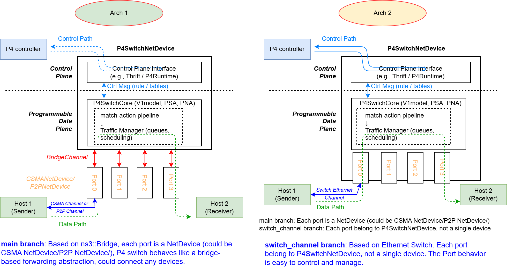

BMv2 runs every packet
Packets pass through the BMv2 pipeline, the reference behavioral model used across the P4 community, so forwarding follows the same semantics as simple_switch.
ns-3 module · BMv2 inside
P4sim embeds the BMv2 behavioral model in the
ns-3 network simulator. The P4 programs and flow tables you run on
simple_switch forward packets in repeatable, end-to-end network simulations, while ns-3 handles
the topology, links, traffic and time.
Features
P4sim couples a P4 packet processing engine with ns-3's network models, so you can study P4 programs in realistic topologies and traffic, at a scale a testbed rarely allows.
Packets pass through the BMv2 pipeline, the reference behavioral model used across the P4 community, so forwarding follows the same semantics as simple_switch.
Compiled P4 JSON from p4c and runtime CLI flow tables (table_add …) load without changes. Several examples are adapted from the p4lang tutorials.
Select V1model, PSA or PNA per switch with one attribute. Each maps to its BMv2 target: simple_switch, psa_switch or pna_nic.
Topology, CSMA or point-to-point links, applications, timing, pcap traces and logging all come from ns-3. Combine P4 switches with any other ns-3 module.
P4Controller adds, modifies and deletes table entries, default actions and action profiles while the simulation runs, through the BMv2 runtime API.
Set the processing rate, queue buffers and BMv2 log level per switch. Thrift ports are picked automatically, so several simulations can run in parallel.
How it works
P4sim adds P4SwitchNetDevice, which takes the place of the standard ns-3 bridge. At start-up each switch loads a compiled P4 JSON program and a flow-table file.
A packet that arrives on a switch port is handed to the BMv2 core, linked in as a shared library. BMv2 parses it and runs the ingress match-action tables. The packet then waits in the switch's egress queues, which ns-3 events serve at the configured processing rate. BMv2 runs the egress pipeline and the deparser, and ns-3 sends the packet out of the chosen port.
The control plane uses BMv2's own interfaces. Flow-table files in runtime CLI syntax are applied at start-up, and P4Controller calls the BMv2 runtime API while the simulation runs.
main · stable
Each switch port is an ordinary ns-3 NetDevice (CSMA or point-to-point). Flexible: the switch can connect to any device.
switch_channel · in development
Ports are internal parts of P4SwitchNetDevice, joined by a switched Ethernet channel. Finer control over port behaviour, closer to real programmable switches. May contain breaking changes.

P4SwitchArch | Architecture | BMv2 target | Example |
|---|---|---|---|
0 | V1model | simple_switch | p4-v1model-ipv4-forwarding |
1 | PSA | psa_switch | p4-psa-ipv4-forwarding |
2 | PNA | pna_nic | p4-pna-ipv4-forwarding |
Get started
Tested on Ubuntu 24.04 LTS with ns-3.39. Installing BMv2 and the P4 tools takes 1–2 hours and up to 15 GB of disk space. The full guide also covers virtual machines and older ns-3 versions.
Use the install script of the official p4lang/tutorials repository.
sudo apt update && sudo apt install git vim cmake
cd ~ && git clone https://github.com/p4lang/tutorials
mkdir ~/src && cd ~/src
../tutorials/vm-ubuntu-24.04/install.sh |& tee log.txt
simple_switch --version # check the installationP4sim is an ns-3 contrib module. The script registers BMv2 with pkg-config.
mkdir -p ~/workdir && cd ~/workdir
git clone https://github.com/nsnam/ns-3-dev-git.git ns3.39
cd ns3.39 && git checkout ns-3.39
cd contrib && git clone https://github.com/HapCommSys/p4sim.git
cd p4sim && sudo ./set_pkg_config_env.shP4SIM_DIRExamples find their P4 programs, flow tables and topologies through P4SIM_DIR.
cd ~/workdir/ns3.39
./ns3 configure --enable-tests --enable-examples
./ns3 build
echo 'export P4SIM_DIR="$HOME/workdir/ns3.39/contrib/p4sim"' >> ~/.bashrc
source ~/.bashrcTwo hosts, one V1model switch. Turning the BMv2 log off makes larger runs much faster.
./ns3 run p4-v1model-ipv4-forwarding
./ns3 run "p4-basic-example --ns3::P4SwitchNetDevice::BmLogLevel=off"
./test.py -s p4sim # run a test suiteWorkflow
p4c. p4c-bm2-ss, p4c-bm2-psa or p4c-bm2-pna produce the JSON pipeline.P4Controller during the run.#include "ns3/p4-helper.h"
#include "ns3/format-utils.h" // GetP4ExamplePath()
std::string dir = GetP4ExamplePath() + "/simple_v1model";
P4Helper p4;
p4.SetDeviceAttribute("JsonPath",
StringValue(dir + "/simple_v1model.json"));
p4.SetDeviceAttribute("FlowTablePath",
StringValue(dir + "/flowtable_0.txt"));
// 0 = V1model, 1 = PSA, 2 = PNA
p4.SetDeviceAttribute("P4SwitchArch", UintegerValue(0));
// processing rate in packets per second
p4.SetDeviceAttribute("SwitchRate", UintegerValue(10000));
// ports: the switch node's CSMA or P2P NetDevices
p4.Install(switchNode, ports);# BMv2 runtime CLI syntax, as for simple_switch_CLI
table_set_default ipv4_nhop drop
table_set_default arp_simple drop
table_add ipv4_nhop ipv4_forward 0x0a010101 => 00:00:00:00:00:01 0x0
table_add arp_simple set_arp_nhop 0x0a010101 => 0x0
table_add ipv4_nhop ipv4_forward 0x0a010102 => 00:00:00:00:00:03 0x1
table_add arp_simple set_arp_nhop 0x0a010102 => 0x1# read by P4TopologyReaderHelper
# hosts switches links
1 2 2
# host 1 and host 2 connect to switch 0
1 h 0 s 1000Mbps 0.1ms
2 h 0 s 1000Mbps 0.1msFrom p4-v1model-ipv4-forwarding, shortened.
Forwarding is defined by the P4 program and its flow tables. These attributes of ns3::P4SwitchNetDevice control the simulation side.
| Attribute | Description |
|---|---|
JsonPath | Path to the compiled P4 JSON file |
FlowTablePath | Path to the flow-table file |
P4SwitchArch | Architecture: 0 = V1model, 1 = PSA, 2 = PNA |
ChannelType | Channel type: 0 = CSMA, 1 = point-to-point |
SwitchRate | Processing rate in packets per second |
QueueBufferSize | Total queue buffer size, in packets |
InputBufferSizeLow | Input buffer for low-priority (external) packets |
InputBufferSizeHigh | Input buffer for high-priority (internal) packets |
EnableTracing | Basic throughput tracing |
EnableSwap | Swap the P4 configuration at run time |
BmLogLevel | BMv2 pipeline log level, from trace (default) to off; off speeds up the simulation |
ThriftPort | Thrift port for the runtime CLI; 0 (default) picks a free port from 9090 up |
Examples
Each example is an ns-3 script plus a p4src/ folder with the P4 source, compiled JSON, flow tables and topology. Run any of them with ./ns3 run <name>.
Results of the paper's experiments: p4sim-artifact-icns3. New examples are welcome as pull requests.
Testing
Run them with ./test.py -s <suite>. The example smoke tests in examples-to-run.py keep the examples from breaking unnoticed.
| Suite | Checks |
|---|---|
p4-packet | Frames in and out of a switch on V1model, PSA and PNA |
p4sim | Program loading, Thrift ports, BmLogLevel |
p4-controller | Flow entries and action profiles, read back |
p4-queue | Capacity, rate, FIFO order, priorities |
p4-p2p-channel | The P4 point-to-point channel |
p4-topology-reader | Reading topology files |
format-utils | Conversion and path helpers |
Packet tests
p4-packet reads a subset of p4c's STF format: send a frame into a port, expect frames on the others. * matches any nibble.
# send this frame into port 0
packet 0 0000000000fe 000000000010 0800 ...
# expect this frame to leave port 1
expect 1 000000000011 0000000000fe 0800 ...Scope
SwitchRate is set by hand per switch; an unsuitable value wastes CPU time on idle polling.Roadmap
From stabilising the current design to a switch-centric architecture with a traffic manager.
Publications
ICNS3 2025 · Proceedings of the 2025 International Conference on ns-3 · ACM
The arXiv preprint appeared as “P4sim: Programming Protocol-independent Packet Processors in ns-3”.
@inproceedings{ma2025p4sim,
title = {P4sim: Simulating Programmable Switches in ns-3},
author = {Ma, Mingyu and Nguyen, Giang T.},
booktitle = {Proceedings of the 2025 International Conference on ns-3},
series = {ICNS3 2025},
pages = {107--115},
year = {2025},
publisher = {ACM},
doi = {10.1145/3747204.3747210}
}People
Maintainer: Mingyu Ma, TU Dresden.
Contributors: developed further in Google Summer of Code 2025 with P4.org, with support from Davide and contributions from Vineet, and from everyone on GitHub.